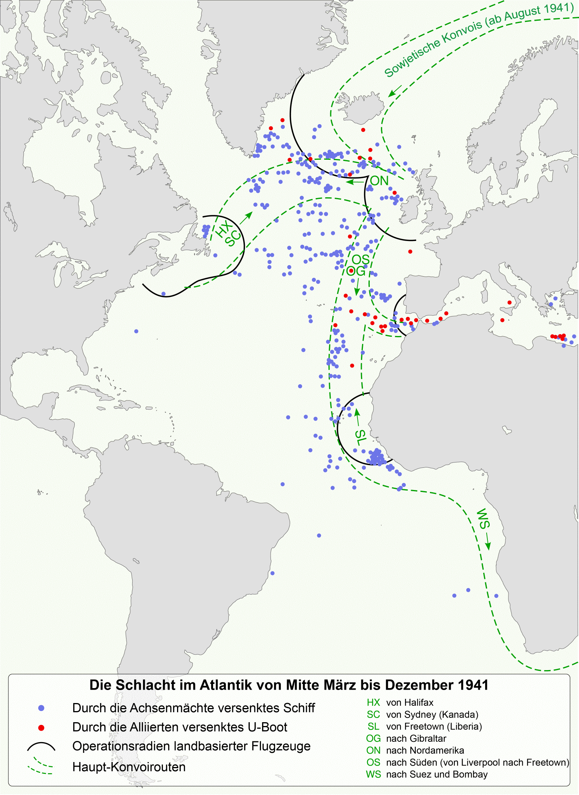

第 10 章
梅托克斯的陷阱
柏林海军总司令部技术处的一份设备更换令，在1943年夏末被盖上“机密”印戳，发往驻法国西海岸的各个U艇基地。文件不长，核心意思却足够明确：现有“梅托克斯”接收机应当尽快从潜艇上拆下，换装“瓦恩茨”晶体接收机。命令没有详细论证，只在附注里点了一句，要求消除超外差接收机因本振泄漏而暴露艇位的可能。
纸张从基尔传到洛里昂，从修船码头的工棚传到每一艘返港补给的前线潜艇。命令所依据的物理事实从未被德国海军自己验证过，但它已经足够驱动一场涉及数百艘潜艇的装备替换。
要理解这道命令为何出现，必须先回到“梅托克斯”本身的物理原理。它是一台超外差式接收机，被德国海军用来截获盟军雷达发射的电磁波，指望在飞机靠近时提前几分钟发出警告。超外差接收机的核心

德国U型潜艇与盟军护航船队
图源：维基共享资源 · The_battle_of_the_Atlantic_1941_map-fr.svg : Sémhur ( talk ) derivative work: Furfur ( talk ) · CC BY-SA 3.0
设计，在于把天线收到的微弱外部信号与接收机内部产生的本地振荡信号进行混频，从而得到一个频率较低、更易于放大的中频信号。
这套方案让接收机更灵敏，也更准确地选择频段，但它天然带有一个伴生现象：本地振荡器产生的信号不可能完全被封在电路内部，总会有一小部分能量从天线泄漏出去。这种泄漏极其微弱，远小于雷达主动发射的功率，但在理论上，如果另一台接收机离得足够近，又恰好调到相同频率，是有可能捕捉到的。
问题恰恰出在“理论上”和“足够近”这两个限定条件上。1943年，英国皇家空军确实认真考虑过利用本振泄漏来发现德国潜艇。英国技术人员知道超外差接收机会泄漏本地振荡信号，也设计了试验装置，尝试从空中探测这种微弱辐射。但试验结果明确：信号衰减太快，只有在极近距离内才可能被捕捉，远远达不到作战飞机搜索潜艇所需的探测距离。英国没有把这一方案投入实战。它始终停留在试验阶段，最终被排在更低优先级的项目清单里。
对于伦敦来说，这个问题已经关闭了。柏林却沿着另一条路径走得更远。1943年夏季，U艇部队的损失数据摆在指挥部的表格上，形成一道不断拔高的曲线。
返航的潜艇数量与出航的潜艇数量之间出现越来越大的缺口，夜间遭遇空袭的报告频繁出现。以往潜艇可以在夜色掩护下浮出海面充电，现在这段时间成了致命窗口。指挥官们需要一种解释，以便让下一轮出海的人相信他们并非毫无办法。
梅托克斯本振泄漏的说法，恰好在这个时刻进入作战讨论。它来自技术军官的提醒，又在传递中逐渐卸掉了原先的限定条件。实验室里的工程师会说，这种泄漏在极近的距离内有可能被高灵敏度设备探测到。传到情报军官耳中，就变成了盟军可能正在利用本振信号。再传到潜艇指挥官那里，已经被压缩成一句话：梅托克斯会暴露潜艇。
从一份附带技术说明的会议记录到一线部队手中的装备更换令，中间隔着若干层机构。每一层都在传递中加入了自己的理解，同时去掉了一部分条件。没有人刻意说谎，但没有人对完整因果链负责。
海军研究局的工程师知道泄漏信号极其微弱，却未必知道英国试验已经失败；情报部门知道盟军雷达频段正在变化，却不掌握本振探测装置的实际状态；
邓尼茨的潜艇指挥部掌握损失数据，却不了解超外差接收机的物理细节。三个系统各自掌握一部分事实，任何单独一方的信息都不足以推翻这个错误结论。但没有一个机构拥有权限和习惯把三方面的数据放在同一张桌面上逐一对照。
海军研究局、帝国研究委员会和空军信号部队之间的管辖边界，使这种对照变得更加困难。纳粹德国的雷达研发从未形成统一的指挥链。空军信号部队掌握着德国大部分雷达技术资源和研发方向，对任何涉及雷达接收机的议题都有很强的领地意识。海军研究局负责舰艇和潜艇上的设备采购与改装，但它在高频技术方面的力量明显弱于空军。
帝国研究委员会控制科研经费分配，其负责人试图在不同军种之间维持平衡，却因此很少对具体技术争端作出清晰裁决。梅托克斯事件恰好落在三者的交汇处：一头是海军在大西洋上的惨重损失，另一头是空军不愿把雷达技术主导权让给海军，中间则是委员会对跨军种争议的回避。
海军在海上挨炸，急切需要一条可以立即执行的装备路线。这种制度性割裂并非孤例，它与同期英美在核武器研发上的合作困境形成了耐人寻味的对照。1943年初，英美两国在曼哈顿计划中的角色几乎完全反转，美国科学家决定不再需要英国的外援，并对原子弹设计方案严格保密，军事政策委员会甚至支持在战争期间加大对英国的保密力度，哪怕这会放慢计划进度。直到1943年8月《魁北克协定》签订，双边合作才得以重启。这种盟友间尚且存在的技术壁垒与信任危机，在纳粹德国的军种之间则演变成了更为致命的组织内耗。
空军关注的是德国雷达研发的整体方向，不愿看到海军自行其是。帝国研究委员会则希望这场争论不要影响到自己的预算安排和学术网络。结果是没有任何一个机构主动去核实英国是否真的拥有能够探测本振泄漏的实战设备。
倒不是说德国完全缺乏调查能力。德国在电子情报和截获技术上有相当积累，也有专门机构负责分析盟军雷达信号。但调查需要跨军种合作，需要把作战损失、技术分析和情报截获放在同一个框架里讨论。德国当时的体制没有提供这种框架。于是，一个可以用一次联合试验或一份情报比对来澄清的问题，被留在机构之间的空地上无人负责。
英国方面的制度安排正沿着另一条轨道运转。莫尔文研究所集中了雷达研发的核心科学家，作战研究部则把前线部队的作战数据、损失统计和装备表现摆在同一个桌面上。两者之间没有行政上的统属关系，却形成了稳定的协作节奏。作战研究部把大西洋上的战报整理成技术评估文件，列出近期潜艇遭遇空袭的时间、位置、频率分布，附上盟军雷达的使用状态和截获情报。
莫尔文研究所的科学家根据这些数据校准技术判断，例如敌方接收机可能覆盖的频段、盟军雷达在某种海况下的实际探测距离。一份典型的联合评估文件往往同时包含作战统计和技术参数：空袭发生在夜间几时，飞机从哪个方向进入，潜艇是否提前采取规避动作，近期缴获的德方设备显示其接收机覆盖哪些波段。最后是一段措辞克制的判断，指出当前急需解决的问题，或者某项设备在实际作战中是否达到预期效果。
文件格式不固定，也没有统一的强制标准，但它的功能很清楚：把战场上的抽象数字和实验室里的具体参数放在同一张纸上，让物理学家、空军军官和海军联络官都能读到同一组事实。
这种工作方式使英国在处理本振泄漏问题时能够迅速收住。试验失败后，莫尔文和作战研究部都没有继续在此投入资源。他们已确认真正的问题不在这里。U艇与飞机之间的夜间对抗，取决于雷达工作频段与接收机覆盖频段之间的错位，取决于巡逻机能否在夜暗中稳定捕获目标，取决于护航船队的路线规划能否让潜艇无从预判。
换句话说，英国知道梅托克斯的失效不在于它泄漏了什么，而在于它从设计上就听不到厘米波。这个判断被写进后续的装备评估，使研发资源得以集中到ASV III机载雷达的改良和巡逻战术的调整上。英国没有浪费一年时间去追一个理论上的微弱信号。
德国选择了另一条路。装备更换令下达后，瓦恩茨接收机开始出现在返港检修的U艇上。瓦恩茨是一种晶体接收机，结构比梅托克斯简单得多。它没有本地振荡器，因此不产生本振泄漏。从这一点看，它确实“消除了”被怀疑的泄漏源。
但它同样带来了一个代价：灵敏度更低，频段覆盖更窄。瓦恩茨只能接收早期米波雷达的信号，对盟军已经广泛使用的厘米波雷达完全无能为力。拆掉梅托克斯，等于拆掉一个已经过时的警报器，换上一个声音更小的警报器。盟军飞机使用的恰恰是新喇叭。德国海军用消除一种不存在威胁的代价，换来一种更彻底的失聪。真正该走的路，其实已经摆在德国海军自己的办公桌上。
西门子和德律风根受海军委托，正在研发一种名为“纳克索斯”的厘米波雷达接收机。它的设计目标是覆盖盟军机载雷达的新频段，为潜艇提供针对厘米波的预警能力。方向没有错。
但纳克索斯从图纸走向实战的过程，暴露出德国电子对抗体系的又一层裂痕。它的天线设计粗糙，外部结构与潜艇上已经密集布置的桅杆、通气管和各类天线难以协调。更棘手的是操作方式：纳克索斯不具备自动扫频告警功能，操作员必须手动旋转天线，在特定频段范围内人工搜索信号。U艇夜间上浮时，最缺的恰恰是时间和稳定的操作空间。雷达信号可能只出现几秒钟，天线旋得稍慢一点，告警就错过了。
纳克索斯的另一个隐患藏在频率测定环节。德国海军虽然知道厘米波雷达的存在，却在很长时间里无法准确测定盟军ASV III雷达的工作频率。频段不精确，手动搜索就变成在一片模糊范围内盲目摸索。雷达信号频宽很窄，天线频带稍宽一点就可能漏掉目标。
纳克索斯的接收机在工厂测试时或许表现尚可，到了海上，面对真实的多信号环境，实操效果大打折扣。而ASV III的准确频段直到1944年春天才被德国情报部门正式测定，并写进情报报告。到那时，纳克索斯已经带着一个不明确的搜索目标在U艇上运行了太久。频率情报的迟到不是某一个部门疏忽的结果，而是情报、技术和作战单位之间缺乏同步机制的必然延迟。
海军研究局能拿到西门子的工程参数，却未必能及时拿到信号情报部门的最新频段情报。空军和帝国研究委员会对雷达频段的判断各有侧重，又都缺少与潜艇作战直接挂钩的渠道。
梅托克斯事件因此并不是一个孤立的技术误会。它改变了德国海军对电子对抗的认知方式。从那以后，德国方面对“被动接收可能暴露目标”的担忧始终没有消失，甚至影响到后来对潜艇雷达信号管制的态度。一个错误的因果链一旦进入条令，就不只是某一条装备命令的内容，而会成为组织记忆的一部分。
纳克索斯的天线，从外观上看，几乎像是从某个临时工棚里拼凑出来的应急品。它被安装在一根可以伸缩的桅杆顶端，主体是一个带有简单反射器的偶极子天线，包裹在粗糙的防水罩内。
天线基座没有自动旋转机构，一根细长的同轴电缆从桅杆内部穿过，沿着潜艇指挥塔的侧面延伸下来，穿过耐压壳体的密封接口，连接到舱室内的一台手动控制器上。控制器的外形像是一个被加固过的无线电旋钮，表面有刻度盘，标示着粗略的方位角。雷达员坐在它前面，一只手握住旋钮，以便缓慢转动天线，另一只手调节接收机的频率刻度。他必须用耳朵听，用眼睛看指示器上微弱的电流摆动，同时在心里估算天线指向的方位。
在北大西洋的夜间，海面常常有风浪，指挥塔上浪花溅起的水雾会附着在天线罩上，可能进一步衰减本来就微弱的信号。水温、盐度、艇体摇晃带来的角度偏差，所有这些因素都需要操作员凭经验补偿。而这套天线的方向性并不精确，它只是一个折中方案：既要轻便到能被潜艇携带，又要在厘米波段保持一定的增益。
西门子的工程师在实验室里做过测试，但实验室的桌面上没有海浪，也没有柴油机舱传来的持续低频振动。
德国海军与空军之间关于雷达研发经费和优先级的争论，早在梅托克斯事件之前就已埋下伏笔。1943年春天，帝国航空部与海军总司令部在柏林召开的一次联席会议上，空军信号部队的代表明确表示，机载雷达的研发和对盟军雷达的对抗手段，应当由空军主导，因为“整个电磁频谱的空中作战维度”属于空军的当然职责范围。海军代表则指出，潜艇在大西洋上的损失已逼近不可承受的临界点，海军急需专用的厘米波预警设备，不可能等待空军慢慢完成测试再移交。会议桌上没有爆发激烈争吵，但双方的立场从一开始就彼此错开。
空军担心的是，如果海军通过西门子和德律风根独立研发纳克索斯，将来可能会要求更多的频谱资源、更多的电子管配额、更多的科研人员编制，这些都会挤占空军自己的雷达项目。海军则担心，如果完全依赖空军提供设备，交付周期和性能指标都不会优先考虑潜艇的特殊需求，舰艇上的空间限制、供电限制和操作环境，与飞机座舱完全不同。
帝国研究委员会的代表坐在两者之间，试图以“技术协调”的名义将双方拉回到同一个项目框架下，但他手里没有强制性的预算裁决权，也没有能力命令空军把技术资料完整移交给海军。会议记录最终被整理成一份措辞温和的纪要，列出了若干“有待进一步协商”的技术问题，其中包括纳克索斯的频段覆盖范围、天线设计标准和量产时间表。这些问题中的大多数，在半年后梅托克斯事件爆发时仍然没有被解决。
英国方面的制度对照，可以在一份保存下来的联合评估文件中看得更清楚。1943年7月，莫尔文研究所和海岸司令部作战研究部共同完成了一份关于“潜艇雷达预警接收机性能评估”的备忘录。文件开头列出了近期击沉或俘获的德国潜艇上缴获的接收机型号，包括梅托克斯和瓦恩茨的实物样本，附有拆解后的电路描述和灵敏度测试曲线。
接下来是一张表格，将盟军不同型号机载雷达的工作频率、脉冲宽度、扫描速率与缴获的德国接收机的标称覆盖范围逐一比对。表格下方是一段用打字机打出的分析文字，指出梅托克斯在米波段的灵敏度虽可接受，但其混频级对厘米波信号完全无响应，而瓦恩茨的频段更窄，仅覆盖早期米波雷达。
文件最后一部分是作战数据的统计：过去三个月内，夜间雷达引导攻击的成功率上升了若干百分点，在被击沉的潜艇中，安装梅托克斯与未安装梅托克斯的比例并没有显著差异——这意味着即使梅托克斯正常工作，也不能有效降低被空袭的概率。
作战研究部的军官在这段文字旁边用铅笔加了一句批注：“敌人可能正在误解自己的暴露原因。”这份文件没有使用任何夸张的措辞，也没有要求立即采取某项行动，它只是把情报、技术和作战三方面的数据摆在一起，让事实自己说话。莫尔文研究所的科学家读到它之后，对本振泄漏探测项目的态度更加明确：既然盟军自己的接收机在实战距离内无法捕捉到那么微弱的信号，德国人就算再怎么担心，也不构成盟军需要应对的威胁。这条结论很快被反馈到设备研发的优先级排序中，本振探测项目被正式搁置。
德国方面并非没有类似的评估能力，但类似的跨部门分析很难在海军内部完成。海军研究局的技术军官可以拿到缴获的盟军雷达部件，也可以进行灵敏度测试，但他们没有权限调阅空军信号情报部门截获的盟军通讯记录，也无法直接获得作战舰队损失统计中与电子对抗相关的原始数据。那些数据分散在潜艇指挥部、海军情报处和空军信号部队各自的档案系统里，没有统一的索引，也没有一个常设的联合分析小组。
即使纳克索斯后来在技术上有所改进，德国U艇在电子对抗上仍处在一种反复摇摆的节奏里。一线人员不知道哪个接收机是安全的，不知道哪个频段该重点守听，也不知道指挥部下一步会发来什么新命令。对装备的信任一旦被消耗，恢复起来远比更换硬件更慢。
德国反制体系的失灵，常常被归因于缺乏多腔磁控管、缺乏厘米波技术、缺乏时间窗口。这些都是事实。英国在磁控管上的突破确实提供了巨大的技术缓冲，厘米波雷达本身也对德国构成了难以跨越的代差。
但如果把梅托克斯事件放进同一条时间轴里观察，更关键的区别不在于德国缺少某一项硬件，而在于它在面对硬件无法解决的问题时，组织无力完成技术认知的校正。英国也犯过错误，也有过错误的情报判断，但它的体制允许这些错误被快速比较和修正。
莫尔文研究所和作战研究部之间的联合评估，让错的东西在几周内就有机会被新的数据纠正。德国的机构之间互相锁死，一个错误判断可以在数月内沉淀成不可动摇的条令。纳克索斯的方向本来是对的，却被组织摩擦消磨掉了时间。
雷达战的胜负从来不只是在实验室里决定的，它也在会议桌、采购清单和军种管辖权之间被反复改写。当制度因子趋近于零时，硬件上的任何进展都会被组织抵消。1944年春天，那份关于ASV III雷达频段的情报报告终于按照程序传阅、编号、归档。它来得太晚了。此时的U艇部队已经失去了夜间上浮的自由，大西洋上的运输船队在盟军护航力量保护下穿行，德国潜艇的猎杀窗口越缩越窄。
那份报告躺在档案架上，与其他来自前线的技术评估、装备改装建议和频谱监测结果并排。没有人再去追问，如果一年前就知道这个频段，纳克索斯的天线设计会不会更快到位，操作员的手动搜索会不会有一个明确的目标。1944年的德国海军有太多报告要处理，太多装备要改装，太多前线要补洞。这份情报不过是一张迟到的纸。在大西洋的夜色中，一艘U艇浮出水面补充空气。
雷达员俯身坐在狭窄的舱室里，手指压着纳克索斯天线的控制旋钮。他慢慢地转，眼睛盯着指示器，耳边只有海流拍打艇壳的声音。飞机可能已经逼近，也可能还在远处。他无法确定。